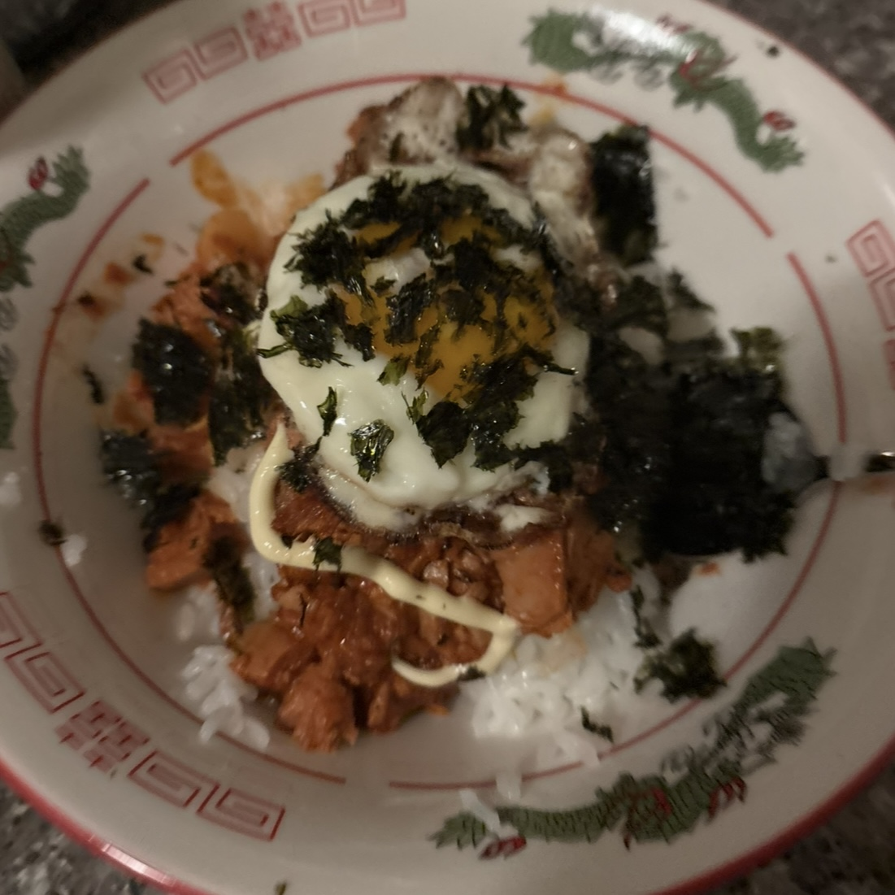

Chamchi Deopbap AKA Korean Tuna Rice Bowl
Home

Chamchi Deopbap, known in English as a Korean Tuna Rice Bowl,
is an easy, affordable, and delicious meal that you can have ready in minutes.
Tuna, mayo, cheese, egg, and seaweed come together over rice
and tastes even better when using Korean canned tuna in hot pepper sauce.
Enjoy it wrapped in roasted seaweed!
Makes 2 Servings
Ingredients
1 3.5 oz can Korean hot pepper tuna (or your tuna of preference)
2 cups cooked rice
½ cup kimchi chopped
2 tablespoons kewpie mayonnaise drizzled
2 tablespoons sesame oil drizzled
1 green onion chopped
2 packages roasted seaweed
- Add rice. Divide cooked rive evenly between 2 bowls.
- Add kimchi. Add chopped kimchi on top, distributing evenly between both bowls.
- Add tuna. Open canned tuna and drain; add on top of each rice bowl.
- Add toppings. For each bowl, drizzle about a tablespoon of mayo, sesame oil, and green onion on top. Crumble a package of seaweed on top of each bowl.
- Enjoy! We recommend mixing everything together and enjoying it with another side of roasted seaweed!